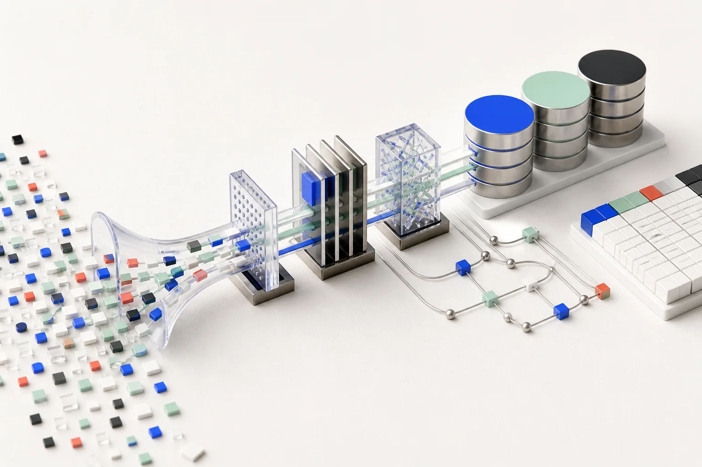
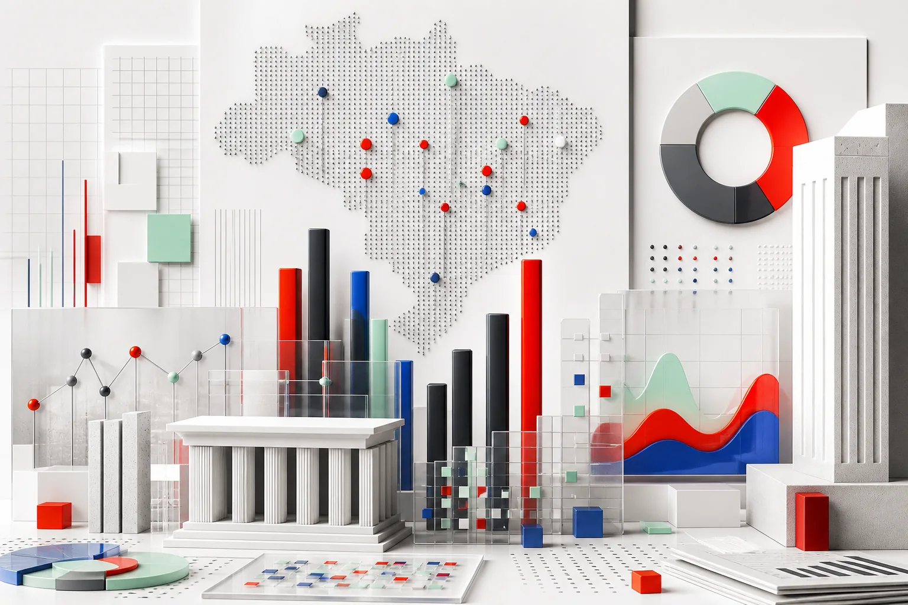
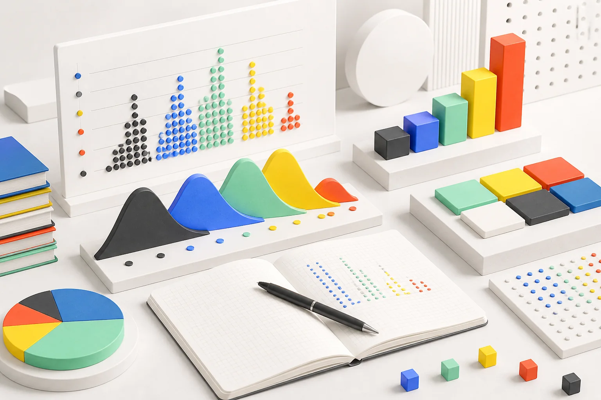

Formação
Ciência de Dados e Machine Learning
Centro Universitário de Brasília
- Machine Learning
- Dados
Dados, produto e decisões
Analista de dados
Transformo dados complexos em produtos analíticos claros, confiáveis e úteis para decisões reais.

01 / Perfil
Profissional de dados com experiência em análise, BI e engenharia de dados, atuando em projetos de grande escala no setor público e no Judiciário.
02 / Trajetória
Centro Universitário de Brasília
Universidade de Brasília · créditos aproveitados

Painéis nacionais para acompanhamento estratégico do desempenho.
Extração, tratamento e validação de dados judiciais.

Análise de indicadores educacionais em Streamlit.
CODEVASF
Dados orçamentários, automações e relatórios gerenciais.
ATTIZ
PNUD & CNJ
BI executivo, governança, ETLs e integrações.
PNUD & CNJ
ETLs sobre o DataJUD, painéis nacionais e qualidade de indicadores.
CNJ
ESTAT Consultoria
O ponto inicial de uma trajetória construída entre análise, tecnologia e comunicação.
03 / Contato
Tem um problema
que os dados podem
ajudar a resolver?